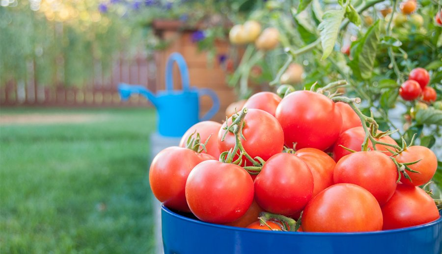

Tomato Care

Sunlight
When to Plant
- Late spring - Early Summer
- May start inside to get a headstart
Planting Recommendations
- Tomatoes require some kind of support during growth
such as a trellis or cage. This keeps them off the ground
- Space 2-3 feet apart. If planting in pots, use a 18-24 in pot
Soil
- pH: 6.2-6.8 for best nutrient absorption
- Mix in 3-4 inches of compost
Water
- Water regurlarly. At least an inch of moisture per week
- If soil is dry, it's time to water
Learn More
Click Here!